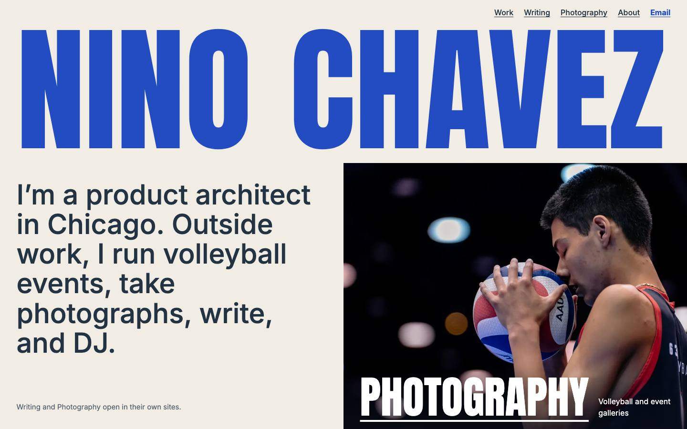
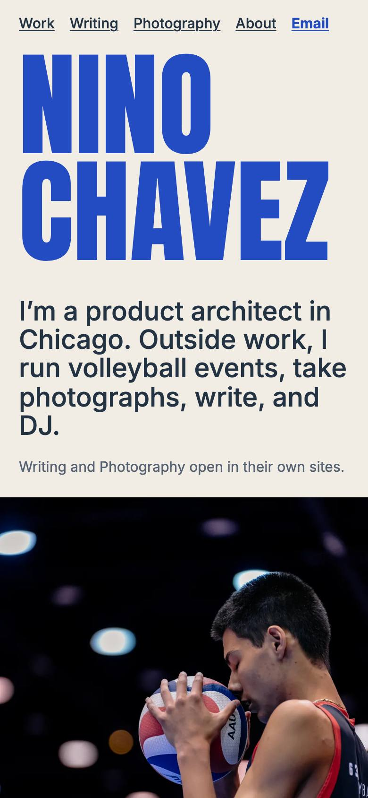
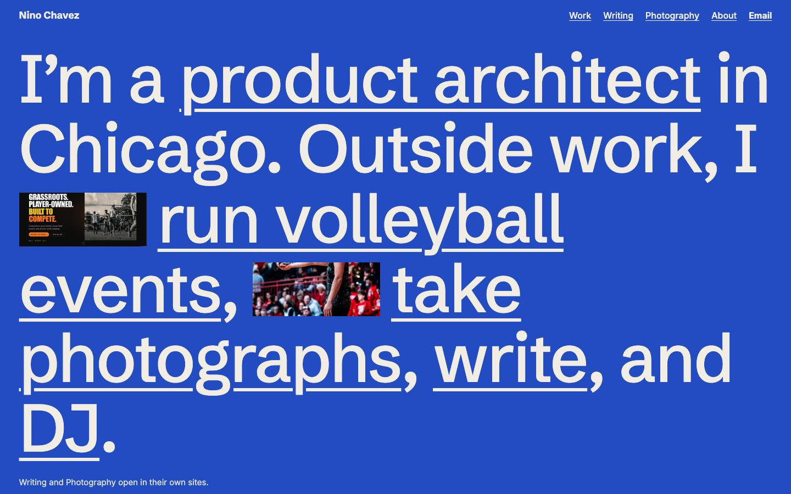
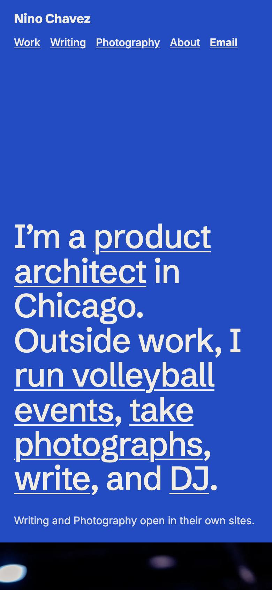
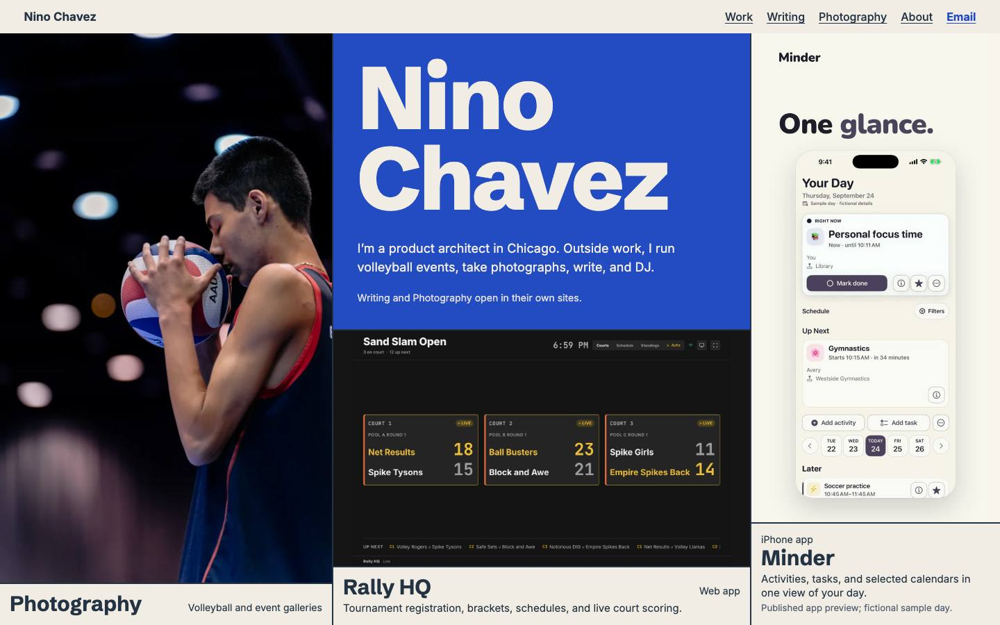
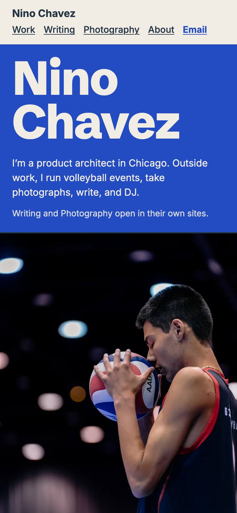

Same words, same photos, same porcelain and cobalt. Pick one and I'll build it.
It's the only one that reads as an agency site in a single glance, and it gives each product a full screen of its own. I'd bring over B's linked statement, so the first thing you read is also how you get around.
The cold reviewer ranked them differently: C first, A second, B last. It preferred C for showing work on the first screen and for its phone layout. I think A still wins on your brief, since C reads closer to a portfolio grid than an agency.


What it is. Your name across the full width in a heavy condensed face, then a photograph, then a full-width color panel per product. Closes on a giant "Get in touch".
Cold review. Strongest identity of the three; found the big headings repetitive on Work and the photo badly cropped.
Since then. Work headings reduced and the photo recropped to show face and ball. Product screens on the phone now run edge to edge.


What it is. Your existing statement at poster size, where the words are the links. Work is a list of large names with one preview that follows the pointer or keyboard.
Cold review. Liked the sentence. Found empty blue, tiny inline images, and a Work page that felt like a template. Ranked last.
Since then. Dead blue on phone Work removed and inline images enlarged. The list on Work is still one preview at a time.


What it is. Opens straight on the work: photograph, name and products fill the first screen edge to edge, with no gutters.
Cold review. Ranked first for real work up front and the best phone stack. Found clipped product screens, crowding and two filler type tiles.
Since then. Product screens now show whole, and the "Selected work" tile is a slim bar. Still the densest of the three.